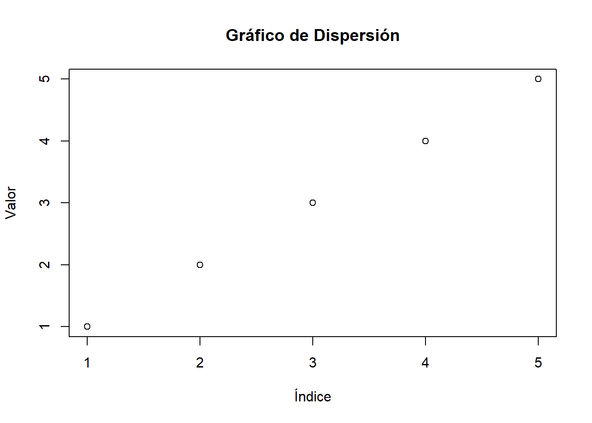
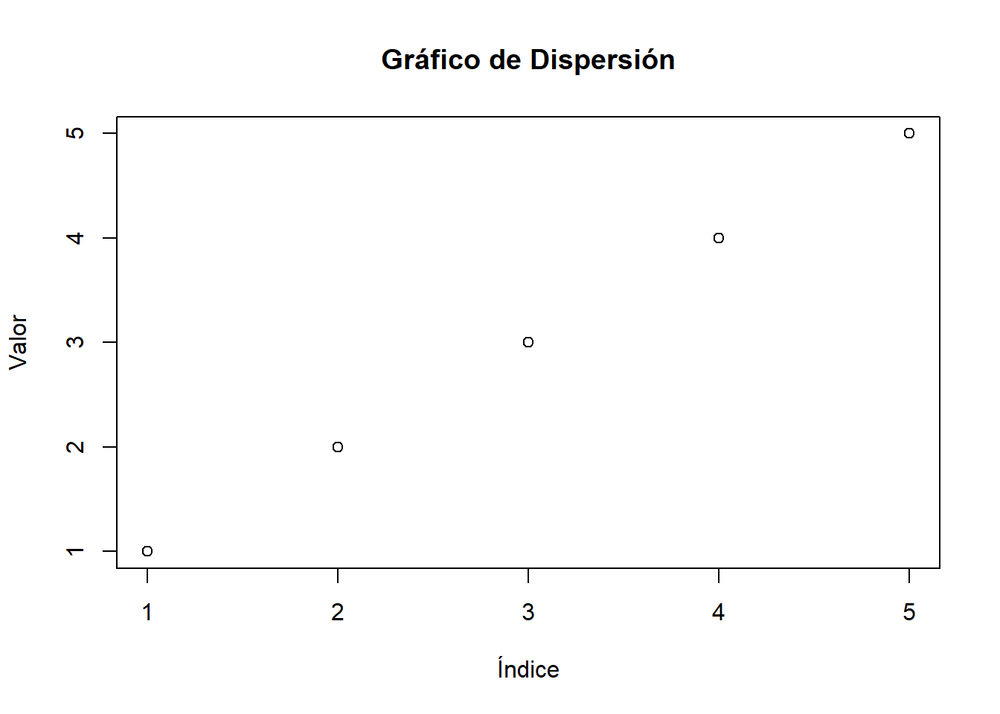

# Crear un vector numérico
numeros <- c(1, 2, 3, 4, 5)
# Calcular la media del vector
media_numeros <- mean(numeros)
# Crear un gráfico de dispersión
plot(numeros, main="Gráfico de Dispersión", xlab="Índice", ylab="Valor")
R base se refiere al conjunto fundamental de funciones y paquetes que se instalan con R. Este núcleo incluye funciones para manipulación básica de datos, operaciones aritméticas, funciones estadísticas básicas, y gráficos simples. R base proporciona las herramientas necesarias para comenzar con el análisis de datos, y su funcionalidad puede ser ampliada mediante la instalación de paquetes adicionales desde CRAN (Comprehensive R Archive Network).
Manipulación de Datos: Funciones para manejar estructuras de datos como vectores, matrices, listas y data frames. Estadísticas Básicas: Funciones para cálculos estadísticos como media, mediana, varianza, y desviación estándar. Gráficos: Herramientas para crear gráficos básicos como histogramas, diagramas de dispersión, y gráficos de líneas. Programación: Funciones de control de flujo, bucles, y la capacidad de definir funciones personalizadas.
# Crear un vector numérico
numeros <- c(1, 2, 3, 4, 5)
# Calcular la media del vector
media_numeros <- mean(numeros)
# Crear un gráfico de dispersión
plot(numeros, main="Gráfico de Dispersión", xlab="Índice", ylab="Valor")
# Crear un data.frame o tabla
df <- data.frame(
nombre = c("Ana", "Luis", "Marta", "Juan"),
edad = c(23, 35, 29, 40),
salario = c(50000, 60000, 70000, 80000)
)
# Crear un data frame
tabla1 <- data.frame(dia = c("Lunes", "Martes", "Miercoles", "Jueves"),
obs = c( 10, 11, "hola", 22))
tabla1 dia obs
1 Lunes 10
2 Martes 11
3 Miercoles hola
4 Jueves 22Algo importante a tener en cuenta es que para construir un data.frame o tabla es necesario tener vectores de una longitud similar. Los vectores pueden tener distintos elementos como ´numeric´o ´character´ sin embargo, se aplicarán las reglas de coerción.
# Para ver una columna específica de una tabla podemos utilizar el operador ´$´
class(tabla1$dia)[1] "character"class(tabla1$obs)[1] "character"# En este caso utilizamos un función de la familia ´as.´ para convertir el vector en numeric. Dado que el vector tiene numero y un palabra ´´hola´
#esta palabra se convierte en NA pues no se puede transformar a numeric.
class(as.numeric(tabla1$obs))Warning: NAs introducidos por coerción[1] "numeric"# Convertir numerico obs
tabla1$obs <- as.numeric(tabla1$obs)Warning: NAs introducidos por coerción# Revisamos la clase de la columna del objeto.
class(tabla1$obs)[1] "numeric"#Promedio
mean(tabla1$obs, na.rm = TRUE)[1] 14.33333# Cargamos la libreria ´dplyr´ y ´clipr´
library(dplyr)
Adjuntando el paquete: 'dplyr'The following objects are masked from 'package:stats':
filter, lagThe following objects are masked from 'package:base':
intersect, setdiff, setequal, unionlibrary(clipr)Welcome to clipr. See ?write_clip for advisories on writing to the clipboard in R.# Operador ´pipe´ tiene uso en "Rbase" y en "tidyverse" con el paquete magrittr
#rbase # magrittr
# |> # %>%
# Creamos un nuevo objeto utilizando la pipe
objeto1 <- tabla1 |> # acá asignamos un nuevo objeto "objeto1", desde "tabla1"
dplyr::filter(!is.na(obs)) |> # se realiza un filtro para quitar "NA" en col "obs"
dplyr::summarise(# Se realiza resumen con medidas
promedio = mean(obs, na.rm = TRUE), # promedio
mediana = median(obs, na.rm = TRUE), # mediana
numero = n()) |> #conteo
dplyr::rename(Media = promedio) # se renombra la columna promedio como "Media"
# También es posible utilizar pipe en rbase, pero solo la del estilo " |> "
objeto1$Media |> class()[1] "numeric"# Con clipr se puede copiar el objeto rapidamente para pegar en excel y otro
# clipr::write_clip(objeto1)
# Con esta función se puede conocer el directorio de trabajo actual
getwd()[1] "C:/Users/rgalv/Nextcloud/PrimerosPasosR/PrimeroPasosEnR"Es posible guardar un objeto de R en diversos formatos. En el caso de que sean objetos como tablas de datos o bases de datos, que no se trabajarán otro lenguaje, puede ser recomendable almacenarlos en formato ´.rds´ que es el nativo de R y permite mejor velocidad de lectura y escritura, además menos tamaño en disco.
También es posible guardar los archivos en formato ´.csv´ u otros. Generalmente esto se puede hacer con las funciones ´write.´ o ´save´
# Guardar RDS
saveRDS(objeto1, "objeto1.rds")
# Guardar objeto1 como un csv
write.csv2(x = objeto1, # corresponde al objeto a exportar
file = "objeto1.csv", # define el nombre que tendrá el archivo exportado
dec = ",", # define que para decimales se utilice ´,´
sep = ";", # define que el separador sea ´;´
row.names = FALSE)Warning in write.csv2(x = objeto1, file = "objeto1.csv", dec = ",", sep = ";",
: attempt to set 'sep' ignoredWarning in write.csv2(x = objeto1, file = "objeto1.csv", dec = ",", sep = ";",
: attempt to set 'dec' ignoredPara los siguientes ejercicios se utilizará el paquete ´cars´ que viene incorporado en R.
# Manipular datos
class(cars$dist)[1] "numeric"# Filtro
cars$speed[cars$speed > 10 & cars$dist > 20] [1] 11 12 12 13 13 13 13 14 14 14 14 15 15 16 16 17 17 17 18 18 18 18 19 19 19
[26] 20 20 20 20 20 22 23 24 24 24 24 25# Crea nuevo objeto a partir de filtro
cars2 <- cars[1:15, 1:2]
# Los valores mayores a 10 de la columna speed se reemplazan con ´NA´
cars2$speed[cars2$speed>10] <- NA
# Para trabajar con esta sintaxis es importante considerar que
# en el interior de los corchetes se sigue el orden [filas, columnas]
# objeto[f,c]
# El dato que está en la tercera fila, de la segunda columna
cars[3,2][1] 4# Filtro de rango de los datos que están entre las filas 1 a la 4 y columnas 1 y 2
cars[1:4, 1:2] speed dist
1 4 2
2 4 10
3 7 4
4 7 22# Usando vector
cars[c(1,4), c(1,2)] speed dist
1 4 2
4 7 22# Para crear una tabla de contingencia se puede utilizar la función ´table()´
table(cars2$speed)
4 7 8 9 10
2 2 1 1 3 prop.table(table(iris$Species))
setosa versicolor virginica
0.3333333 0.3333333 0.3333333 table(iris$Species, iris$Petal.Length)
1 1.1 1.2 1.3 1.4 1.5 1.6 1.7 1.9 3 3.3 3.5 3.6 3.7 3.8 3.9 4
setosa 1 1 2 7 13 13 7 4 2 0 0 0 0 0 0 0 0
versicolor 0 0 0 0 0 0 0 0 0 1 2 2 1 1 1 3 5
virginica 0 0 0 0 0 0 0 0 0 0 0 0 0 0 0 0 0
4.1 4.2 4.3 4.4 4.5 4.6 4.7 4.8 4.9 5 5.1 5.2 5.3 5.4 5.5 5.6 5.7
setosa 0 0 0 0 0 0 0 0 0 0 0 0 0 0 0 0 0
versicolor 3 4 2 4 7 3 5 2 2 1 1 0 0 0 0 0 0
virginica 0 0 0 0 1 0 0 2 3 3 7 2 2 2 3 6 3
5.8 5.9 6 6.1 6.3 6.4 6.6 6.7 6.9
setosa 0 0 0 0 0 0 0 0 0
versicolor 0 0 0 0 0 0 0 0 0
virginica 3 2 2 3 1 1 1 2 1Un bucle for en R permite ejecutar repetidamente un bloque de código un número específico de veces.
La estructura básica del cilo for se describe de la siguiente forma: for (variable in secuencia){ operaciones }
# for (variable in secuencia) {
# Código a ejecutar
# }Variable: Es una variable que toma los valores de cada elemento en la secuencia.
Secuencia: Es un vector que contiene los valores que la variable tomará sucesivamente.
Código a ejecutar: Es el bloque de código que se ejecutará en cada iteración del bucle.
Ejemplo 1: Iteración en una secuencia
for (i in 1:5) {
print(i)
}[1] 1
[1] 2
[1] 3
[1] 4
[1] 5En este caso, i tomará cada valor en la secuencia 1, 2, 3, 4, 5, y print(i) se ejecutará en cada iteración, imprimiendo cada número.
Ejemplo 2: Iteración en un vector
# Crea un vector numérico
numeros <- c(2, 4, 6, 8, 10)
# Realiza el bucle para imprimir los valores del vector
for (num in numeros) {
print(num)
}[1] 2
[1] 4
[1] 6
[1] 8
[1] 10Ejemplo 3: Operaciones dentro del bucle
numeros <- c(1, 2, 3, 4, 5)
for (num in numeros) {
cuadrado <- num^2 # Operación
print(paste("El cuadrado de", num, "es", cuadrado))
}[1] "El cuadrado de 1 es 1"
[1] "El cuadrado de 2 es 4"
[1] "El cuadrado de 3 es 9"
[1] "El cuadrado de 4 es 16"
[1] "El cuadrado de 5 es 25"Ejemplo 4: Bucles anidados
for (i in 1:5) {
for (j in 1:5) {
resultado <- i * j
print(paste(i, "x", j, "=", resultado))
}
}[1] "1 x 1 = 1"
[1] "1 x 2 = 2"
[1] "1 x 3 = 3"
[1] "1 x 4 = 4"
[1] "1 x 5 = 5"
[1] "2 x 1 = 2"
[1] "2 x 2 = 4"
[1] "2 x 3 = 6"
[1] "2 x 4 = 8"
[1] "2 x 5 = 10"
[1] "3 x 1 = 3"
[1] "3 x 2 = 6"
[1] "3 x 3 = 9"
[1] "3 x 4 = 12"
[1] "3 x 5 = 15"
[1] "4 x 1 = 4"
[1] "4 x 2 = 8"
[1] "4 x 3 = 12"
[1] "4 x 4 = 16"
[1] "4 x 5 = 20"
[1] "5 x 1 = 5"
[1] "5 x 2 = 10"
[1] "5 x 3 = 15"
[1] "5 x 4 = 20"
[1] "5 x 5 = 25"En este caso, el bucle interno recorre los valores del 1 al 5 para cada valor del bucle externo, generando una tabla de multiplicar.
Las funciones en R son fundamentales para estructurar el código y hacerlo reutilizable. Utilizar paquetes como purrr y kableExtra nos permite ampliar las capacidades de R para manejar listas y generar tablas con estilo, respectivamente. Al seguir una estructura clara y consistente, podemos desarrollar código R eficiente y fácil de mantener.
Para definir una función en R, Se utiliza la palabra clave function. Aquí tienes la estructura básica:
nombre_de_la_funcion <- function(argumento1, argumento2, ...) {
# Cuerpo de la función
# Código a ejecutar
resultado <- argumento1 + argumento2
return(resultado)
}Ejemplo: Crear una función para sumar dos números
suma <- function(a, b) {
resultado <- a + b
return(resultado)
}
# Usar la función
suma(3, 5) # Devuelve 8[1] 8Se pueden establecer valores predeterminados para los argumentos de una función:
suma <- function(a = 1, b = 1) {
resultado <- a + b
return(resultado)
}
# Usar la función con valores predeterminados
suma() # Devuelve 2[1] 2En R, también se puede definir funciones dentro de otras funciones:
operacion <- function(a, b) {
suma <- function(x, y) {
return(x + y)
}
producto <- function(x, y) {
return(x * y)
}
resultado_suma <- suma(a, b)
resultado_producto <- producto(a, b)
return(list(suma = resultado_suma, producto = resultado_producto))
}
# Usar la función
operacion(3, 5) # Devuelve una lista con la suma y el producto$suma
[1] 8
$producto
[1] 15Las funciones anónimas (también conocidas como funciones lambda) son útiles para operaciones rápidas y se utilizan a menudo con funciones de orden superior como apply, lapply, sapply, entre otras.
# Usar una función anónima para elevar al cuadrado los elementos de un vector
vector <- c(1, 2, 3, 4)
resultado <- sapply(vector, function(x) x^2)
print(resultado) # Devuelve c(1, 4, 9, 16)[1] 1 4 9 16El paquete purrr de tidyverse proporciona una forma funcional de trabajar con listas y vectores. Aquí hay un ejemplo de cómo usar una función personalizada con map:
library(purrr)
# Definir una función para multiplicar por 2
multiplicar_por_dos <- function(x) {
return(x * 2)
}
# Usar map para aplicar la función a cada elemento de una lista
lista <- list(1, 2, 3, 4)
resultado <- map(lista, multiplicar_por_dos)
print(resultado) # Devuelve una lista con elementos multiplicados por 2[[1]]
[1] 2
[[2]]
[1] 4
[[3]]
[1] 6
[[4]]
[1] 8